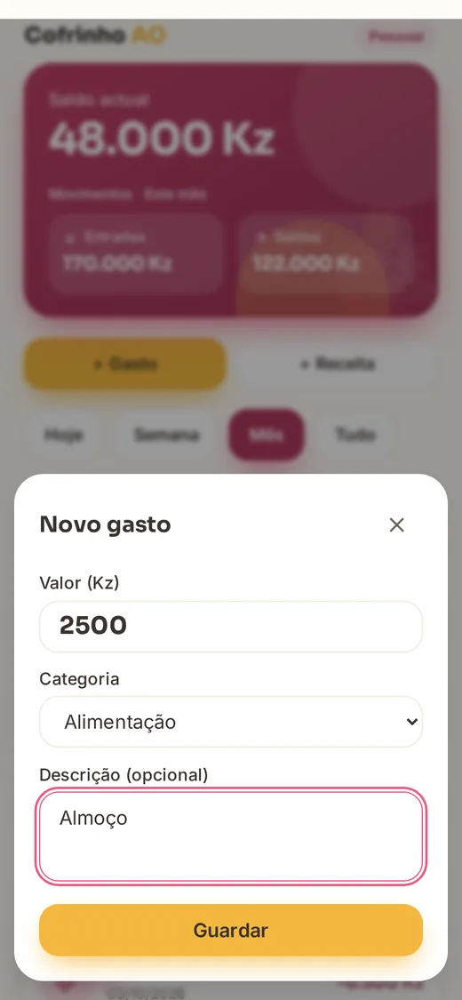
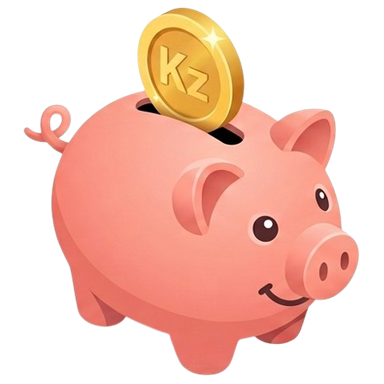
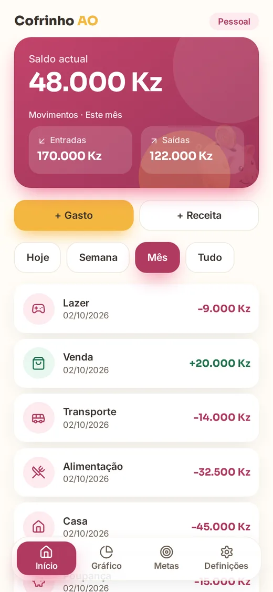
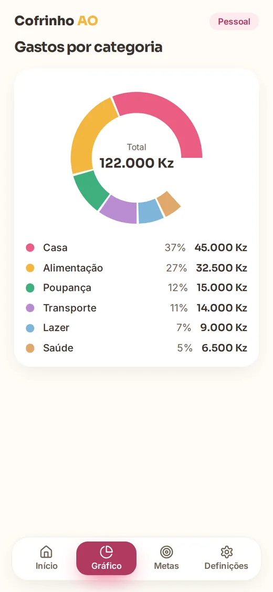
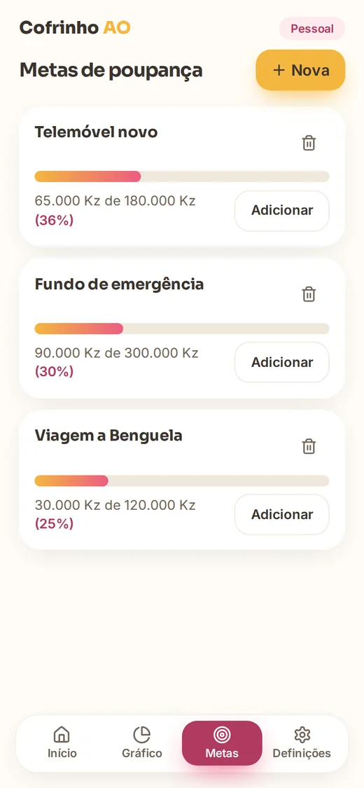
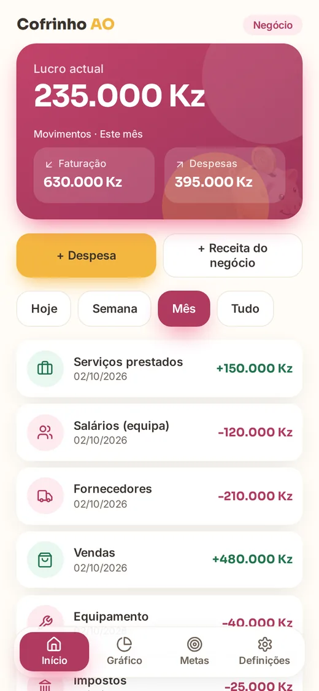

Regista em segundos
Gastos e receitas com um toque, com categorias prontas (Alimentação, Transporte, Casa…). Filtra por hoje, semana ou mês.


Cofrinho AOO Cofrinho AO regista os teus gastos e receitas em Kwanzas, mostra gráficos por categoria e ajuda-te a poupar para as tuas metas. Funciona mesmo sem internet.
Gratuito na versão experimentalSem anúnciosSem cartão

Sem instalar nada da loja e sem papelada.
Toca em “Abrir o app”. Abre no teu telemóvel ou no computador.
Com o teu email. Recebes um código para confirmar.
Um toque em “+ Gasto”, o valor e a categoria. O saldo actualiza logo.
Gastos e receitas com um toque, com categorias prontas (Alimentação, Transporte, Casa…). Filtra por hoje, semana ou mês.

Um gráfico por categoria mostra o que pesa mais no teu mês, com percentagens e valores em Kz.

Cria uma meta (um telemóvel, um fundo de emergência) e vai juntando. Cada valor que guardas fica registado nos teus gastos.

Muda para o modo Negócio e passa a ver Lucro, Faturação e Despesas, com categorias próprias para vendas, fornecedores e impostos.

Os ecrãs mostram dados de exemplo.
Toca nos botões e vê o saldo a mexer em tempo real. É uma demonstração: nada fica guardado.
Regista offline. Quando houver rede, os dados sincronizam sozinhos.
Valores e formatos como tu usas.
Dois modos, cada um com os seus termos e categorias.
Vê o progresso a crescer.
Exporta tudo ou elimina a conta quando quiseres.
Começa no telemóvel e continua no computador, com a mesma conta.
Sem letras pequenas. Se um dia houver planos pagos, avisamos antes e mostramos o preço total.
O Cofrinho AO instala-se a partir do navegador e abre como uma app.
Abre o app no Chrome.
Toca no menu ⋮ e em Instalar app (ou usa o botão Instalar em Definições).
Abre pelo ícone no ecrã principal.
Abre o app no Safari.
Toca no botão Partilhar (quadrado com seta).
Escolhe Adicionar ao ecrã principal.
No iPhone a instalação só funciona no Safari.
Sim, na versão experimental. Se um dia houver planos pagos, avisamos antes e mostramos o preço total em Kwanzas.
Não para registar os teus movimentos: ficam guardados no telemóvel. A internet é precisa para criar a conta e para sincronizar entre dispositivos, o que acontece sozinho quando houver rede.
A ligação é cifrada (HTTPS) e a tua senha é guardada de forma irreversível. Podes exportar os teus dados ou eliminar a conta quando quiseres, em Definições. Lê a Política de Privacidade.
Ainda estamos a melhorar. Pode haver erros, e a tua opinião ajuda muito: diz-nos o que falta.
Sim. No iPhone instala-se pelo Safari; no computador abre no navegador.
A Liv Solution, uma startup digital angolana que também cria sites, design e gestão de redes sociais.
Leva menos de um minuto a abrir. É grátis nesta versão experimental.